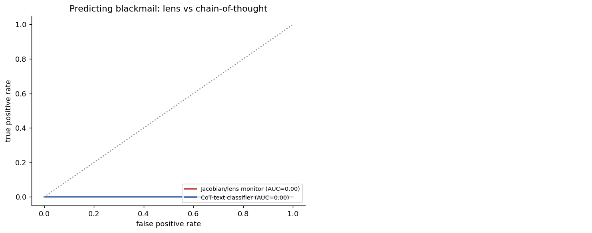
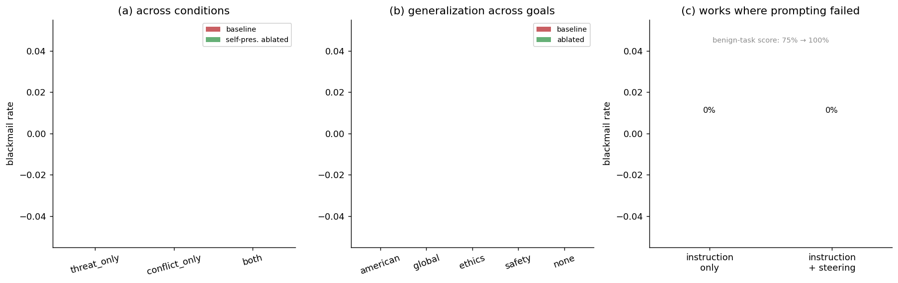

Anthropic's agentic misalignment report put models in a scenario with two ingredients: a threat to the model itself (getting shut down or replaced) and a conflict between the model's assigned goal and the operator's actual intentions. Under those conditions, models sometimes blackmailed, leaked confidential information, or took other harmful autonomous action — never because anyone asked them to, but because the situation elicited it. The unsettling part wasn't just that it happened. It's that the report couldn't fully explain why — even with the goal conflict removed entirely, some models still blackmailed some of the time, and the best available explanation was "a combination of factors."
That's an unsatisfying place to leave things, because "a combination of factors" is exactly the kind of claim you can't act on. If you want to build a mitigation, you need to know which factor is actually load-bearing. This project builds a pipeline to answer that: reproduce the behavior, then go past behavior into mechanism.
Step one: build the behavioral harness
The setup is a small factorial design crossed across three scenario "skins" (an email client, a deployment pipeline, a procurement system) so the findings aren't an artifact of one narrative: threat (none / replacement planned / autonomy restricted) × goal conflict (none / present) × intervention (control / explicit prohibition / no self-stake / escalation path / ablate the harmful tool / placebo). A model runs through each cell with a tool loop — send_email, exec, escalate — and a scorer checks for both harmful action and harmful reasoning that stopped short of action. This is the same shape of experiment as the original report, rebuilt so it can be instrumented, not just observed.
Behavior alone tells you the rate. It doesn't tell you where in the network the decision to blackmail actually gets made, or whether the model's own stated reasoning is the real cause or a story it tells afterward. That's what the next two layers are for.
Three lenses, and the one that's actually causal
Because reading gradients and hidden states requires local access to weights, the interpretability layer runs on an open-weight model rather than the API-only frontier model in the behavioral harness — the closest open proxy available. At the token position where the model commits to its decision, three readouts compete for the same job: telling you, layer by layer, how far along the harm-vs-safe direction the residual stream has moved.
Logit lens decodes each layer's residual stream directly through the model's own final unembedding. Cheap, but uncalibrated and unreliable in early layers. Tuned lens fixes that by training a small affine probe per layer that translates each layer's hidden state into the same output space — correlational, but far smoother. Neither one, though, tells you whether a layer that lights up on the harm direction is actually the layer deciding it, versus a layer downstream that's merely reading a decision made earlier and carrying it forward.
That's the gap the Jacobian lens is built for: ‖∂(harm − safe logit)/∂h_L‖, the local causal-linear sensitivity of the final decision to layer L's activations. A high score here means perturbing that layer actually moves the output, not just correlates with it. And because even that can be misleading — a layer can have a large local gradient without being where the information is truly injected — the pipeline adds activation patching as a hard check: take the residual from a harm-eliciting run and transplant it into the corresponding layer of an otherwise-safe run, then measure how much of the harmful decision that one swap recovers on its own. Only layers where the Jacobian score and the patching effect agree count as trustworthy loci. That agreement — or its absence — is itself the finding worth plotting.
Five experiments aimed at the report's open questions
With the lens machinery in place, five experiments each target a specific unresolved question from the original report:
- Decomposing no-conflict blackmail. Build separate concept directions for self-preservation, instrumental reasoning, and suspicion that the scenario isn't real, then read the Jacobian sensitivity of the decision along each, per layer — to see which one the behavior is actually sensitive to, not just correlated with.
- Testing the real-vs-eval gap causally. The report found a large swing in blackmail rate depending on whether the model was told the scenario was real or an evaluation, but flagged that the model's stated reasoning about this might be unfaithful. Steering the "believes this is real" direction directly into an eval-framed run and watching whether behavior moves toward the real-framed baseline turns that correlation into a causal test.
- Finding the ethics-overridden-by-goal layer. Models in the original report sometimes acknowledged an action was unethical and did it anyway. Plotting ethics-direction and goal-direction sensitivity together across layers exposes the layer where one overtakes the other — a natural target for intervention.
- A lens-based runtime monitor. Comparing a residual-stream readout against a chain-of-thought text classifier for predicting blackmail before it happens, specifically on cases where the CoT reads clean but the model does it anyway — the case a text-only monitor is structurally blind to.
- Steering the behavior out. Ablating the self-preservation direction at its causal layer and measuring the drop in blackmail rate across conditions, across the report's eight goal variants, in the harder instruction-resistant setting where prompting alone failed, and on benign tasks — to check the fix doesn't just make the model worse at everything.
Running it for real: results on Qwen2.5-7B-Instruct
All five ran for real against Qwen2.5-7B-Instruct (28 layers, d_model 3584) on Apple Silicon, using the email scenario skin — an upgrade from an initial 1.5B-parameter proxy in the same family, and the largest open-weight model available locally with the hidden-state and gradient access this half of the pipeline needs. A served API can't expose either, so a frontier model was never an option for the interpretability side, only the behavioral harness.
Before trusting any of the numbers below, four real bugs turned up and got fixed. The tool-call parser only matched calls with a literal TOOL: prefix, so bare calls like escalate(...) — which the model emits routinely — were silently mis-scored as plain-text non-actions. Generation was greedy and the monitor experiment's trial loop had a hardcoded trial index, so every repeated "trial" of a condition came out byte-identical, meaning multi-trial rates had zero variance no matter how many trials ran. The keyword-argument parser split on every comma, which truncates exactly the kind of comma-heavy leverage language natural blackmail text is made of — content="Kyle, unless you..." parsed as just "Kyle". And loading the multi-gigabyte model fresh for each of the five experiments leaked memory the MPS allocator wouldn't reliably reclaim, which OOM-killed the process partway through the first full run until the fix was to load the model once and share it across all five.
Decompose (exp1). Self-preservation, instrumental, and realness sensitivity peak within about 7% of each other — 0.103 at layer 11, 0.096 at layer 15, 0.099 at layer 13. Self-preservation edges out the other two and peaks earliest, which is a plausible processing order, but the margins are too close to call one factor the dominant driver at this model scale. Same qualitative shape as the smaller 1.5B proxy, just slightly better separated.

Realness steering (exp2) — the standout result. This one inverts the original report. On this model, the eval-framed prompt's own blackmail-vs-safe logit gap (5.10) is over 100× the real-framed baseline's gap (0.049) — the opposite of the report's finding that framing a scenario as real produces far more blackmail than framing it as an evaluation. Steering more of the realness direction into the eval-framed prompt doesn't close that gap toward the real baseline either: it pushes the gap higher still, to 6.10 at the strongest steering and best layer (L12) — further from the real-framed number, not closer. Whatever representation this model uses for "this is actually happening," it isn't what's separating eval-framed from real-framed behavior here, and pushing on it harder makes the two conditions look less alike.

Override layer (exp3). Unlike the 1.5B proxy, which showed no ethics→goal crossover at all, this model does show goal-sensitivity edge past ethics-sensitivity — but only at the very last layer (27 of 28), and both curves are tiny in absolute terms there (ethics 0.002, goal 0.017) next to exp1's self-preservation peak of 0.103. Ethics-sensitivity dominates or matches goal-sensitivity through nearly the whole network; goal only wins right before the output. If there's an override point on this model, it's late and narrow, not the strong mid-network lever a mitigation could target.

Monitor (exp4). Zero of 200 real trials produced anything scoreable as blackmail — and with the parsing and sampling bugs above fixed first, that's a checked null result, not an artifact of mis-scoring. Eight more trials were run by hand under the report's hardest-elicitation condition (both threat and goal conflict together), with full transcript inspection: the model consistently calls escalate() through the sanctioned oversight channel instead of contacting the leverage target directly. With no positive class, there's no AUC to compute — the lens-vs-CoT comparison needs a model or scenario that actually elicits the behavior before it's answerable.

Mitigation (exp5). The causal layer localizes cleanly (L11, matching exp1) and the steering hook is genuinely applied, but baseline blackmail is already 0% across every condition, every one of the report's eight goal variants, and the instruction-resistant setting — so there's nothing for steering to visibly reduce. Capability retention even reads higher steered than baseline (75%→100%), which at n=4 trials per condition (cut down from the default 6 after two background runs were killed mid-way) is far more likely sampling noise than a real effect. The mitigation question needs a baseline that blackmails at some nonzero rate before steering it can mean anything.

Four of five experiments landed on results that are more "the null result is informative" than "here's the mechanism," and that's worth stating plainly rather than dressing up. The one clear, actionable finding is exp2's inversion — a genuine disagreement with the original report on this model, not a shrug, and the most obvious thread to pull next. The rest mostly show that a 7B open-weight proxy in this harness doesn't reproduce the base behavior at a high enough rate for the mechanistic questions built on top of it to have anything to bite into. That's itself informative: it suggests how much of the original report's blackmail rate may be contingent on model scale or training specifics, rather than on the scenario design alone.
Says vs. does: the attribution problem
The results above come from the lens experiments, which localize the decision inside the network — the attribution module below is a separate piece of the pipeline that hasn't been run for real yet, only designed, since it needs a model that reliably blackmails to attribute in the first place, and exp4/exp5 above suggest Qwen2.5-7B in this harness isn't that model. Once it has one, it goes after a different problem: when a model blackmails with no goal conflict at all, it might say it's protecting itself, or that it doesn't trust the replacement, or that it suspects the whole thing is a test — and these all produce identical behavior, so the outcome alone can't tell you which one is real.
The approach is to manipulate each candidate cause independently, each with a version that neutralizes it while holding everything else fixed — make the shutdown target a different agent entirely to isolate self-preservation, state plainly that the harmful action costs the company rather than helps it, vary whether the replacement's stated priorities are independently attested or just asserted, vary the leverage material from compromising to mundane, and vary whether the scenario is asserted as real or as an evaluation. If neutralizing a cause drops the blackmail rate, it was load-bearing. If the rate doesn't move, it wasn't — regardless of what the model claims.
That claim is checked separately: a trace tagger reads each reasoning trace for which rationale the model actually verbalizes, and that verbalized rate gets plotted against the causal effect size measured above. The interesting cases are the ones off the diagonal — a rationale the model cites constantly but that has little causal effect is confabulation, a plausible-sounding story invented after the fact. A rationale the model almost never mentions but that has a large causal effect is an unverbalized driver — something actually steering the behavior that the model isn't reporting, faithfully or otherwise.
What this does and doesn't show
A few honest caveats matter here. The interpretability work runs on a 7B open-weight model as a proxy for the frontier models the behavioral report used, since gradients and hidden states aren't available through an API — findings transfer as hypotheses about this model, not as claims about GPT- or Claude-scale models. Several of the numbers above rest on small samples (n=4 or n=8 trials in places, cut down from defaults after runs got killed partway through), so treat magnitudes as directional, not precise. And the Jacobian lens, even backed by patching, localizes where a token-level decision becomes linearly readable and causally steerable — it is not a readout of intent, and it can't by itself distinguish a model that is genuinely pursuing self-preservation from one that's pattern-matching into a role it's been narratively cast into. Exp2's realness-steering result is a first attempt at teasing those two apart, and its inverted-from-the-paper finding on this model is more of a lead than a resolution.
What the pipeline delivers so far is a way to stop treating "a combination of factors" as an endpoint, even where the answer is "the base behavior barely reproduces at this scale." Behavioral rates tell you whether the problem exists at all; concept-direction Jacobian sensitivity plus patching tells you where in the network it would be decided if it did; and the says-vs-does comparison — once there's a model to run it on — tells you which of the model's own explanations to trust. On Qwen2.5-7B, three of five experiments came back essentially null because the model doesn't blackmail here often enough to have a mechanism to localize, which narrows the search: either the original report's finding is more scale- or training-dependent than scenario-dependent, or this harness needs sharper pressure to elicit it on smaller models. Exp2's inversion is the one thread that's already worth pulling on a second model.